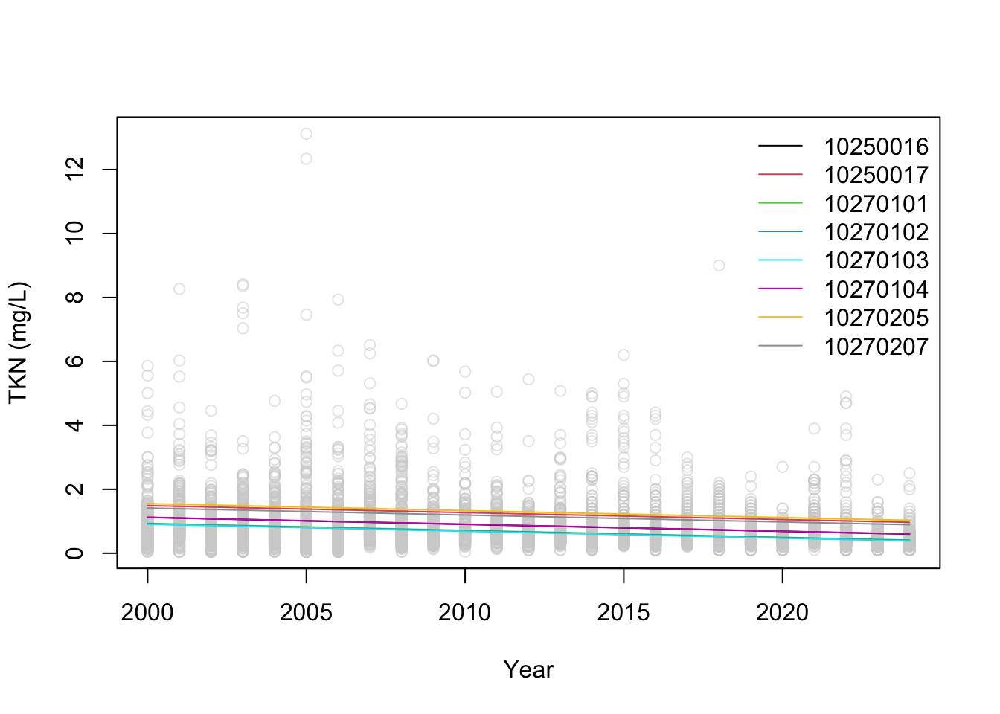
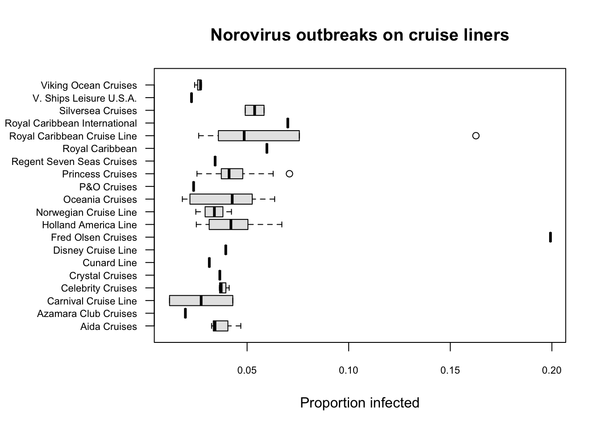

6 Day 6
6.1 Review
What is a model?
Scientific vs. Thought vs. Mathematical
Statistical?
Why do we use models?
Trend analysis
- What’s happening with total kjeldahl nitrogen in Kansas?

- Simple linear regression
\[ y_i = \beta_0 + \beta_1 t_i + \epsilon_i \]
\[ \epsilon_i \sim N(0, \sigma^2 \textbf{I}) \]
\[ y_i \sim N(\mu,\sigma^2 \textbf{I}) \]
\[ \mu = \beta_0 + \beta_1 t_i \]
mod_df = data.frame(UOM = kslr_tkn$UOM,
Year = kslr_tkn$Year,
huc08 = kslr_tkn$huc08)
m1 = lm(UOM ~ Year, data = mod_df)
summary(m1)##
## Call:
## lm(formula = UOM ~ Year, data = mod_df)
##
## Residuals:
## Min 1Q Median 3Q Max
## -1.1020 -0.4490 -0.2046 0.1621 12.0753
##
## Coefficients:
## Estimate Std. Error t value Pr(>|t|)
## (Intercept) 44.898799 3.430303 13.09 <2e-16 ***
## Year -0.021873 0.001706 -12.82 <2e-16 ***
## ---
## Signif. codes: 0 '***' 0.001 '**' 0.01 '*' 0.05 '.' 0.1 ' ' 1
##
## Residual standard error: 0.8546 on 4761 degrees of freedom
## Multiple R-squared: 0.03338, Adjusted R-squared: 0.03318
## F-statistic: 164.4 on 1 and 4761 DF, p-value: < 2.2e-16or = order(mod_df$Year)
plot(mod_df$Year, mod_df$UOM,
col="#D1D1D180",
xlab = "Year",
ylab = "TKN (mg/L)")
lines(mod_df$Year[or], predict(m1, type="response")[or], lwd = 2, col = "#512885")
What about space?
- Add a “cluster effect”
\[ y_{ij} = \beta_0 + \beta_1 t_i + \beta_2 s_j \epsilon_{ij} \]
\[ \epsilon_{ij} \sim N(0, \sigma^2 \textbf{I}) \]
\(s_j\) pertains to the “HUC” levels
Think of it as a categorical predictor
Goes to \(0\) based on which HUC is present
##
## Call:
## lm(formula = UOM ~ Year + as.factor(huc08), data = mod_df)
##
## Residuals:
## Min 1Q Median 3Q Max
## -1.4040 -0.4201 -0.1632 0.1809 11.8143
##
## Coefficients:
## Estimate Std. Error t value Pr(>|t|)
## (Intercept) 44.617022 3.305166 13.499 < 2e-16 ***
## Year -0.021749 0.001642 -13.242 < 2e-16 ***
## as.factor(huc08)10250017 0.368838 0.072993 5.053 4.51e-07 ***
## as.factor(huc08)10270101 -0.187518 0.075699 -2.477 0.013278 *
## as.factor(huc08)10270102 -0.201293 0.068389 -2.943 0.003263 **
## as.factor(huc08)10270103 -0.214657 0.081542 -2.632 0.008504 **
## as.factor(huc08)10270104 0.004271 0.068111 0.063 0.950001
## as.factor(huc08)10270205 0.430969 0.074249 5.804 6.88e-09 ***
## as.factor(huc08)10270207 0.292476 0.077379 3.780 0.000159 ***
## ---
## Signif. codes: 0 '***' 0.001 '**' 0.01 '*' 0.05 '.' 0.1 ' ' 1
##
## Residual standard error: 0.8216 on 4754 degrees of freedom
## Multiple R-squared: 0.108, Adjusted R-squared: 0.1065
## F-statistic: 71.98 on 8 and 4754 DF, p-value: < 2.2e-16
- Where are we headed?
6.2 Stringing sentences
Correlative inference
- Which cruise liner should you avoid?

\[ \left[y|\alpha, \beta \right] \equiv \text{Beta}(\alpha,\beta) \]
\[ \alpha = \mu \phi \qquad \beta = (1 - \mu) \phi \qquad g(\mu) = \textbf{X}^\prime \boldsymbol{\beta} \]

- Seems like Fred Olsen is a bad idea…
| Liner | Frequency |
|---|---|
| Aida Cruises | 3 |
| Azamara Club Cruises | 1 |
| Carnival Cruise Line | 2 |
| Celebrity Cruises | 4 |
| Crystal Cruises | 1 |
| Cunard Line | 1 |
| Disney Cruise Line | 1 |
| Fred Olsen Cruises | 1 |
| Holland America Line | 12 |
| Norwegian Cruise Line | 3 |
6.3 Telling stories
What just happened?
Are these results a problem?
- Is the context behind them bad?
What is data?
What is a statistic?
What is it for?
What are the limitations of statistics? Of science?
A major step in telling a story
- Having an idea for the plot
What makes a good plot?
How do scientific inquiries happen?
By accident (Grokking)
By madness (Game theory)
Taking risks (Chemotherapy)
Via spite (Scale-free networks)
“Things breaking” (?)
Is Fred Olsen a potent vector of norovirus?
- Are Carnival cruises really that safe of an option?
bbreg = function(){
# process model
for(i in 1:n){
y[i] ~ dbeta(alpha[i], beta[i])
# mean/precision parameterization
alpha[i] <- mu[i] * phi
beta[i] <- (1-mu[i]) * phi
# logit link function
logit(mu[i]) <- a + b*x[i]
}
# priors
phi ~ dgamma(1,.01)
a ~ dnorm(0,.1)
b ~ dnorm(0,.1)
}
# setting up jags data
jags_dat = list(y = cruise$infected_proportion,
x = as.integer(factor(cruise$liner)),
n = nrow(cruise))
# initial proposal values
inits = list(a = .01, b = .01, phi = 1)
# fitting the model
bbreg_mcmc = jags.fit(jags_dat,c("a","b","phi"),
bbreg,inits,n.adapt=5000,
n.update=5000,n.iter=100000,
thin=1,n.chains=1)# reproducibility seed
set.seed(73)
# number of posterior samples
K = nrow(samp)
# set to carnival and fred olsen
x_pred = c(3,8)
a_post = samp[,1] # intercept post
b_post = samp[,2] # effect par post
phi_post = samp[,3] # precision par post
# vectorized posterior logit(mu) predictions
eta_post = outer(a_post, x_pred,
FUN = function(ai, x) ai) +
outer(b_post, x_pred)
# "un-do" the link function
mu_post = invlogit(eta_post)
# alpha posterior predictions
alpha_post = mu_post * phi_post
# beta posterior predictions
beta_post = (1 - mu_post) * phi_post
# posterior predictions of y
y_post = matrix(rbeta(length(alpha_post),
alpha_post, beta_post),
nrow = K, ncol = length(x_pred))


Any questions?
6.4 Linear models
We learned the alphabet
Developed our vocabulary
And by the end of STAT 240, we formed sentences
But do we know what those sentences meant?
How can we develop a story if we’re just throwing things together?
We need to understand the logic of our phrases
The best way to do that is to look at something with well-defined logic
In a writing course:
Of Mice and Men
To Kill a Mockingbird
Frankenstein
Theater
Oedipus
Hamlet
MacBeth
History
Fall of the Roman Empire
Holy Crusades
Transition between WW1 to WW2
- For statistics, we use linear models
\[ \boldsymbol{y} = \beta_0 + \beta_1 x_1 + \beta_2 x_2 + ... + \beta_k x_k + \boldsymbol{\epsilon} \]
\[ \boldsymbol{y} = \textbf{X} \boldsymbol{\beta} + \boldsymbol{\epsilon} \]
Why?
We know (almost) everything about them
Easy to “extend” the theory to other models
“Linear” has a different definition here
We’ll stick to “linear in the parameters”
Supplemental material will include a more robust definition
\[ \begin{aligned} & \boldsymbol{y} = \beta_0 + \beta_1 \boldsymbol{x}_1 + \beta_2 \boldsymbol{x}_1^2 + \boldsymbol{\epsilon} \\ \\ & \boldsymbol{y} = \beta_0 + \beta_1 10^x + \boldsymbol{\epsilon} \\ \\ & \boldsymbol{y} = \beta_0 + \beta_1 g(\boldsymbol{x}_1) + \beta_2 \log(\boldsymbol{x}_2) + \boldsymbol{\epsilon}\\ \\ & \boldsymbol{y} = \beta_0 + e^{\beta_1 \boldsymbol{x_1}} + \boldsymbol{\epsilon}\\ \end{aligned} \]
Which one of these models is linear?
What’s a common nonlinear model?
\[ P(t) = P_0 e^{rt} \]
6.5 Parameter estimation
- Estimating \(\boldsymbol{\beta}\)
\[ (\boldsymbol{X}^\prime \boldsymbol{X})^{-1} \boldsymbol{X}^\prime \boldsymbol{y} \]
\[ \underset{i}{\arg\min} \sum_{i=1}^n (\boldsymbol{y}_i - \boldsymbol{x}_i^\prime \boldsymbol{\beta})^2 \]
\[ \underset{i}{\arg\max} \mathcal{L}(\boldsymbol{y}|\boldsymbol{\beta},\sigma^2) \]
- In R
- Ordinary least squares
## [,1]
## 179.967471
## x1 1.219441- Optimization
## $par
## [1] 180.014143 1.218704
##
## $value
## [1] 774258.3
##
## $counts
## function gradient
## 111 NA
##
## $convergence
## [1] 0
##
## $message
## NULL- Using R’s
lm()method
##
## Call:
## lm(formula = y ~ x1)
##
## Coefficients:
## (Intercept) x1
## 179.967 1.219
- Maximum Likelihood Estimation
nll = function(par){
beta = par[1:2]
sig2 = par[3]
-sum(dnorm(y,X%*%beta,sqrt(sig2),log=TRUE))
}
optim(par=c(0,0,2),fn=nll,method = "Nelder-Mead")## $par
## [1] 180.513781 1.210868 2555.099421
##
## $value
## [1] 1618.597
##
## $counts
## function gradient
## 260 NA
##
## $convergence
## [1] 0
##
## $message
## NULLlm()
##
## Call:
## lm(formula = y ~ x1)
##
## Residuals:
## Min 1Q Median 3Q Max
## -123.476 -32.560 -5.745 28.024 302.330
##
## Coefficients:
## Estimate Std. Error t value Pr(>|t|)
## (Intercept) 179.9675 17.7116 10.161 < 2e-16 ***
## x1 1.2194 0.3213 3.795 0.000179 ***
## ---
## Signif. codes: 0 '***' 0.001 '**' 0.01 '*' 0.05 '.' 0.1 ' ' 1
##
## Residual standard error: 50.72 on 301 degrees of freedom
## Multiple R-squared: 0.04566, Adjusted R-squared: 0.04249
## F-statistic: 14.4 on 1 and 301 DF, p-value: 0.0001786